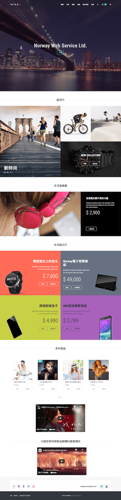

<div class="card mb-5 mb-xl-10">
    <div class="card-header cursor-pointer">
        <div class="card-title m-0">
            <span class="fs-2 fw-bold text-gray-700 m-0">商城系統</span>
        </div>
    </div>
    <div class="card-body">
        
        <h3 class="fw-bold mb-5">背景</h3>
        <div class="fs-5 lh-lg ls-1 text-gray-800 mb-6">
            近期的客戶我感覺越來越往電商的型態發展，也就是在會員專區購買的行為不太能滿足這一類需求。所以我建議公司能延展產品線，這個功能於此催生。這只是個開始，因為目前公司發展的方向還不太著重這塊，但個人認為對於我們產業來說，這或許是另一個能重點佈局的地方。
        </div>
        <div class="fs-5 lh-lg ls-1 text-gray-800 mb-6">
            這裏花費了我一點心思去做設計，把所有區域模塊化，也就是除了首頁的大圖，都可以動態決定要擺放的順序(覺得有點像宜搭<span class="fs-10 text-gray-400">應該是宜搭跟我的有點像</span>，哈哈)。
        </div>
        <h3 class="fw-bold mb-5">目前的樣子</h3>
        <div class="fs-5 lh-lg ls-1 text-gray-800">
            商城首頁
        </div>
        
        <div data-src="shop_index.gif" class="rs-gif mb-4"></div>
        <div class="fs-5 lh-lg ls-1 text-gray-800">
            RWD
        </div>
        <div data-src="shop_mobile.gif" class="rs-gif mb-4"></div>
    </div>
</div>